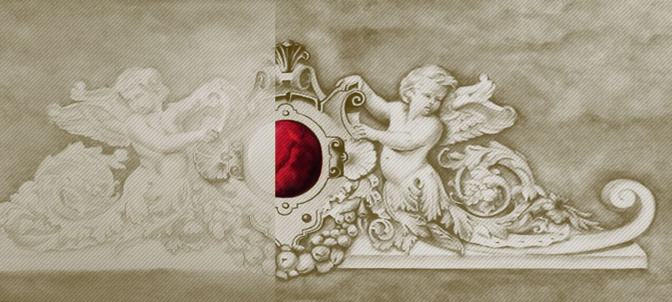

<section id="projects" class="projects"><div class="w3-row"><div class="w3-mobile w3-col border w3-content"><div class="w3-right-align"><h4 class="w3-hide-large">نمونه کارها / پروژه های اخیر</h4><h3 class="w3-hide-small w3-hide-medium">نمونه کارها / پروژه های اخیر</h3><P>در اینستاگرام بیشتر ببینید</P><a href="https://instagram.com/patineh.naghshineh" target="_blank" class="w3-border w3-button dir">تماشا در اینستا<div class="w3-border fa fa-arrow-left arrow-position"></div></a></div></div><div class="w3-mobile w3-rest"><div class="w3-center project-container"><div class="w3-pannel w3-rightbar project-info w3-content w3-right-align"><p>این نقاشی به دور از شکل ظاهری آن در واقع سوژه ایست برای جلب نظر بیننده.</p><p>این طرح به دلیل بزرگی شومینه ارائه شده که در عین حال که شکل ظاهری شومینه حفظ می شود بتوان جلوه بیشتری به آن داد و زیبایی شومینه را دو چندان کرد. دو بچه فرشته یک لوح با ارزش را نگهداری می کنند که در حقیقت چشم عمارت ویلایی می باشد.</p><em>با پیوستن به <a href="https://instagram.com/patineh.naghshineh" target="_blank" class="w3-hover-text-gray">صفحه ی اینستاگرام پتینه نقشینه </a><span>بیشتر شگفت زده خواهید شد</span></em></div></div></div></div></section>